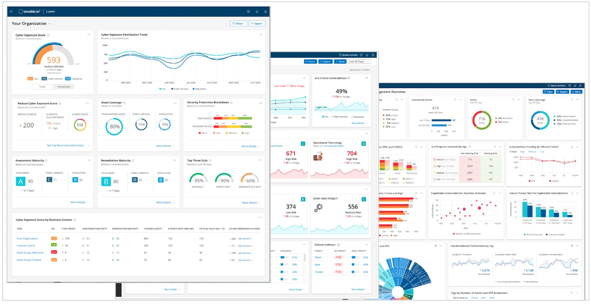
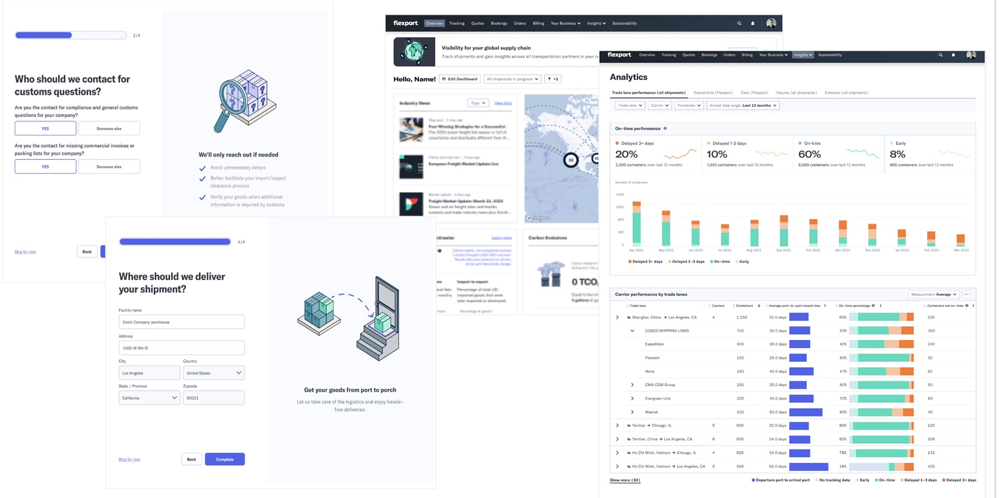

Once we have the answers to these questions, ambiguity can surface when we don't know if the ideas we developed will solve the problem, or whether they are “good enough.” All design work holds some level of ambiguity, which is why exploration and validation are built into the design process. Greenfield products especially are nourished by exploring ambiguity with the intent to develop new ideas, new technology, and new experiences.
As a leader, the key levers for accelerating design production despite ambiguity are (1) building robust and flexible infrastructure to support design and development and (2) choosing the right people for the job.
To me infrastructure means putting in place patterns that can be used across products and identifying the lego pieces that can be used to modularly assemble low-complexity flows, reducing the need to develop pages from scratch. In the ‘design system’ section below I talk a bit about developing and implementing this infrastructure. But processes can only go so far. For infrastructure to foster acceleration through ambiguity, investing in people and relationships is key. My theory of design relies on fostering a safe environment where all ideas are treated with respect, where brainstorming sessions are part of the design mechanism, and ‘design buddy’ programs are in place to help ensure a creative dynamic environment.
Even with this infrastructure in place, choosing the right people for a given task is crucial. Assign the wrong people and you risk introducing stress that can bring innovation to a halt. The skills a team might need will vary based on the product, timeline etc. Some aspects of a project call for designers with a strong technical background, while others will be best suited for designers who are highly visual. But backgrounds aren't deal breakers. When building a team for greenfield products it is most important to identify designers that are energized by some level of hecticness and uncertainty, that can think on the fly and enjoy the creative process without developing an attachment to their work. A functional creative team sees obstacles as opportunities for evolution.
At Tenable, we built Lumin, a greenfield AI-based product that helps CISO explore different scenarios of impact around vulnerability management in the cyber security space (see figure 14). We knew that users needed the solution, but what was technically possible was evolving on a weekly basis. The designers working on the product enjoyed the creative process of evolving the product and requirements contemporaneously, allowing the new product to accelerate under very vague requirements.

At Flexport, my team worked hard to design a greenfield product that was lightweight and tailored to meet the needs of logistics customers in the Small Business space (SMB). Ambiguity was high. Requirements kept changing and the identity of our users was forming as we evolved the product. Our strategy was to keep the design lean and work closely with leadership, marketing, PM and engineers to develop a product on a very aggressive timeline. When the product had taken shape and we were only a few months from release, Flexport acquired a company that had a domestic version of the global solution we had worked on. Overnight, we had to pivot and build some of the intended functionality into an existing product. To maintain a holistic experience, the designers needed to quickly adjust and let go of designs they had invested a lot of time and sweat into building. In record time –– just a few weeks –– we mashed the two very different products into one maintaining a smooth experience end-to-end even when it meant sacrificing painstakingly crafted designs for the sake of cohesion (see figure 15).
